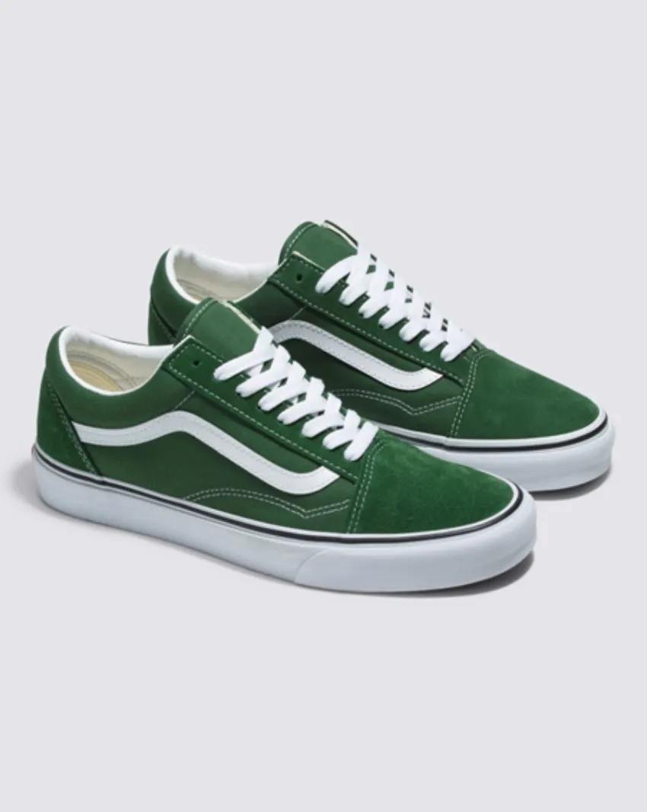
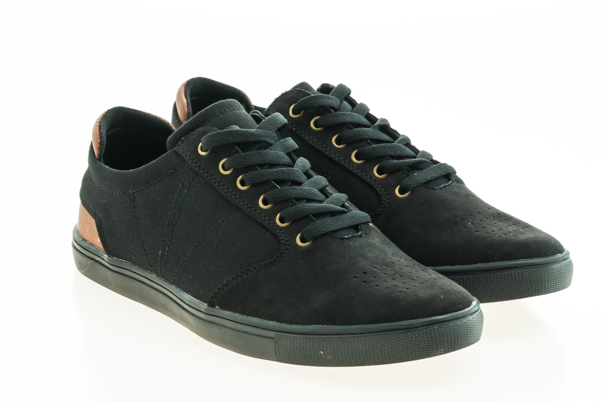
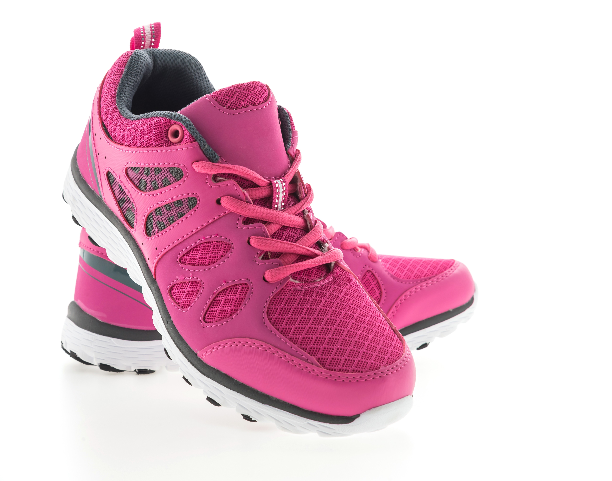
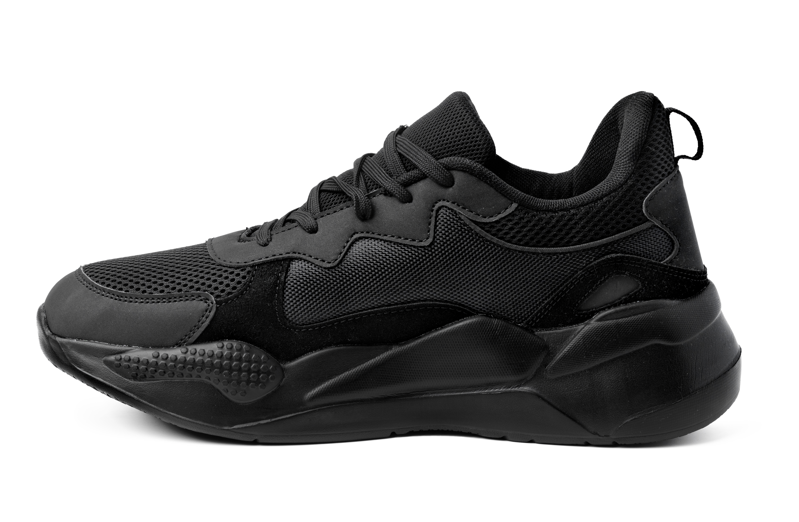
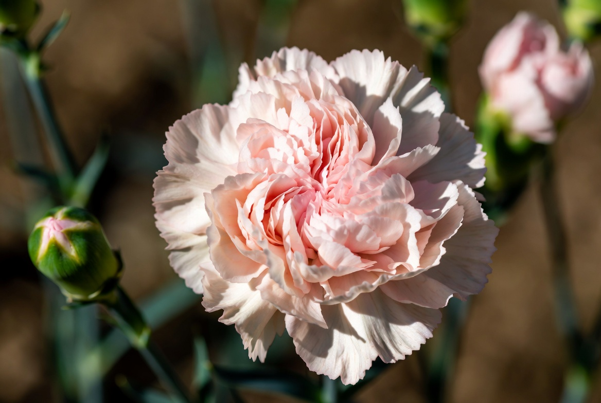
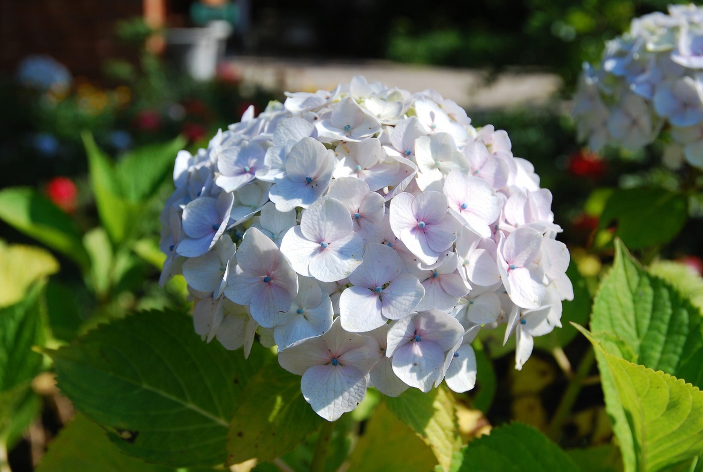

Product highlights
- Lightweight Upper Material
- Breathable Mesh Design
- Cushioned Sole Support
- Available in Multiple Colors
Premium Footer Presentation
Explore our latest show showcase featuring clean layout product highlight, and modern css styling technique,
View collectionsthis uses internet css from the <style<block.

The box is styled in the HTML file using internal CSS, while the rest of the page is styled using the external stylesheet
| Size | Lenght(cm) | Fit |
|---|---|---|
| 7 | 25.0 | Snug |
| 8 | 26.0 | Regular |
| 9 | 27.0 | Roomy |



This Sentence uses inline CSS to demonstrate direct styling inside the HTML Body.
Roses are most often linked with love, beauty, and affection. Red roses are closely tied to romance, while white roses are often linked with purity.
Tulips are often connected with love, warmth, and cheerful energy, which makes them perfect for spring bouquets, birthday gifts, and light modern arrangements.
Sunflowers are often linked with happiness, loyalty, and positivity, so they are a favorite for cheerful gifts, summer bouquets, and sunny garden borders.
Lilies are often linked with purity, renewal, and calm beauty. White lilies are especially common in sympathy flowers and formal arrangements.
Orchids are commonly linked with elegance, strength, beauty, and luxury. That is why they are such a popular choice for premium gifts, hotel spaces, offices, and modern homes.
They are often linked with joy, innocence, and cheerful energy. Gerberas feel less formal than roses or orchids, which makes them easy to give and easy to enjoy.

Carnations are often associated with love, admiration, and remembrance, though meanings can shift depending on color.

Hydrangeas are known for their full, rounded flower heads and soft, lush appearance.